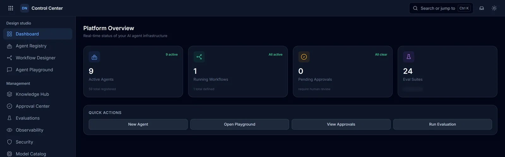
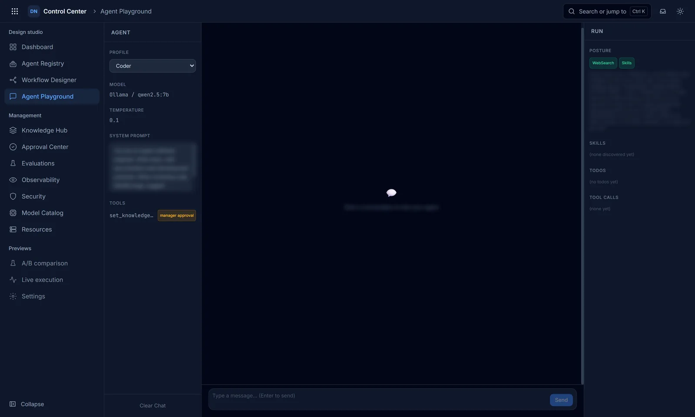
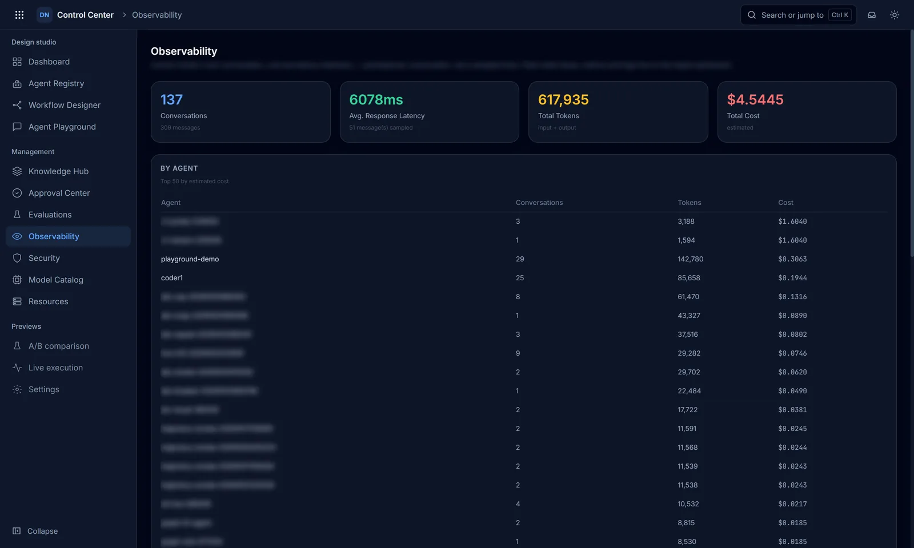
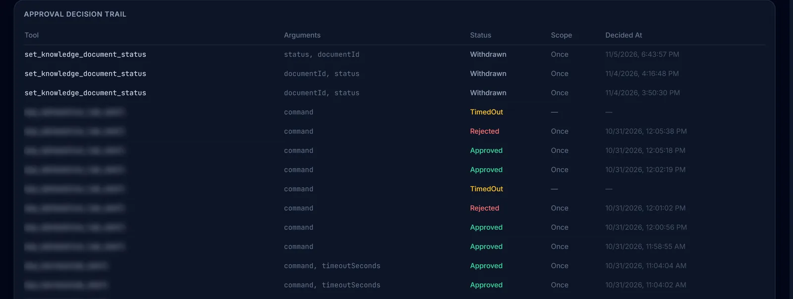
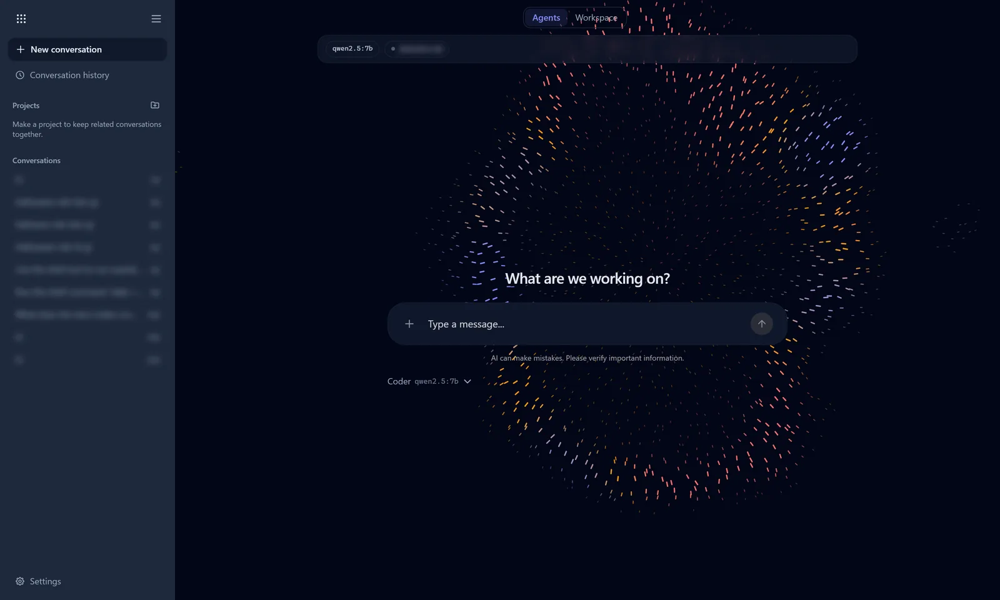
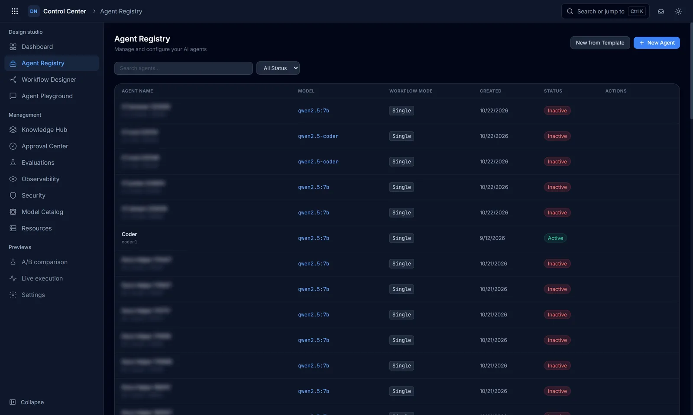

7+ years building enterprise .NET systems by day. On my own time, a self-built AI platform: governed model access, cost control and agent evaluation on .NET.
Open to: AI Platform Engineer / Senior .NET roles · Ho Chi Minh City or Remote
This dashboard visualizes my professional journey. The Team Size Evolution demonstrates my capability to operate in large-scale enterprise environments, while the Skill Radar highlights my dual proficiency in traditional Backend Engineering and modern AI implementation.
Team size across different career stages (log scale).
Balance between Core Engineering and AI Specialization.
A lightweight FAQ that matches keywords in your question against my CV (no LLM behind it). Ask a question or click a suggested prompt.
A timeline of consistent growth, from foundational Japanese ERP systems to enterprise microservices, plus an AI platform I build on my own time.
May 2023 - Present
Aug 2024 - Present · Enterprise approval system (client confidential)
Business-critical approval workflows for an enterprise client whose program spans 500+ engineers (peaking above 900). I lead the 3-person sub-team that owns this system.
May 2023 - Jul 2024 · Real Estate & Construction ERP
Architected core microservices for a large-scale Real Estate & Construction ERP in a 48-person team.
Apr 2021 - May 2023
Developed core modules for Property Management ERP. Optimized complex SQL queries, reducing report loading time by 40%. Mentored junior developers.
Oct 2019 - Apr 2021
Contributed to Japanese Construction ERP (PROCES.S5/S6). Handled detailed design, implementation (VB.NET, ASP.NET), and strict unit testing protocols.
It started with one question: what does it take to let an LLM act inside an enterprise system without weakening the guarantees that make it enterprise-grade? Instead of guessing, I built the system and found out: a .NET 11 fleet where tool-calling agents run beside conventional business microservices under one .NET Aspire runtime.
I build it alone, with AI coding agents as my pair programmers. They write code fast, and they also drift. So I made the rules executable: every design decision is a written record, every rule that matters is a test that fails CI, and every bug fix ships with the test that would have caught it. The agents work inside those rails; the decisions stay mine.






The tools I work with, at work and in my own AI platform.
Azure AI Essentials Pro Cert
Microsoft & LinkedIn